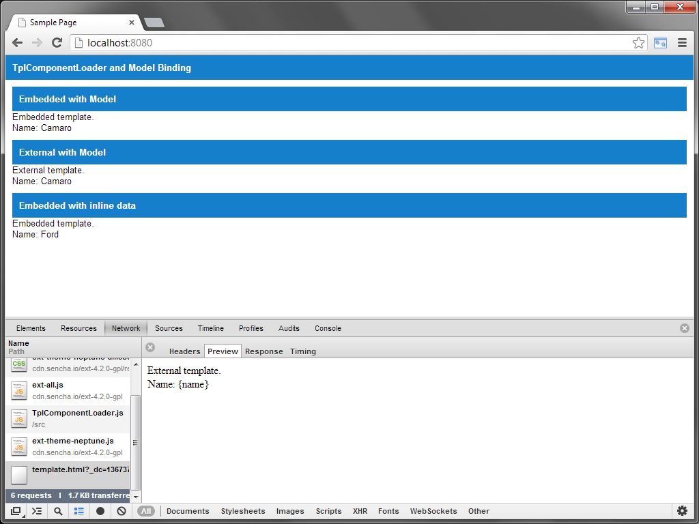
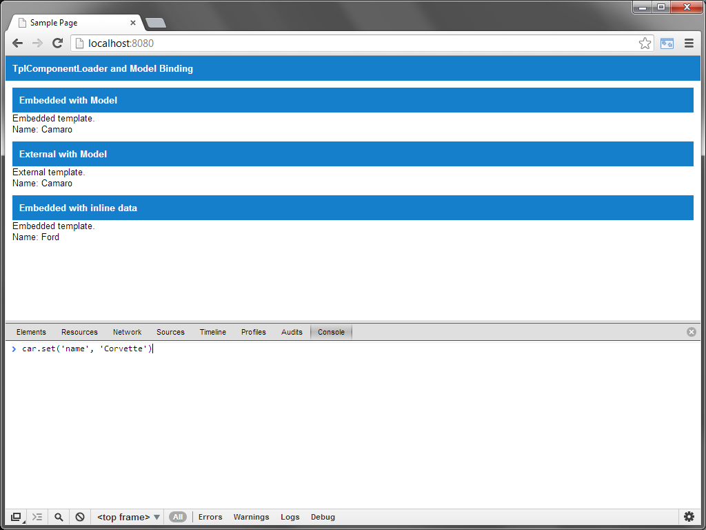
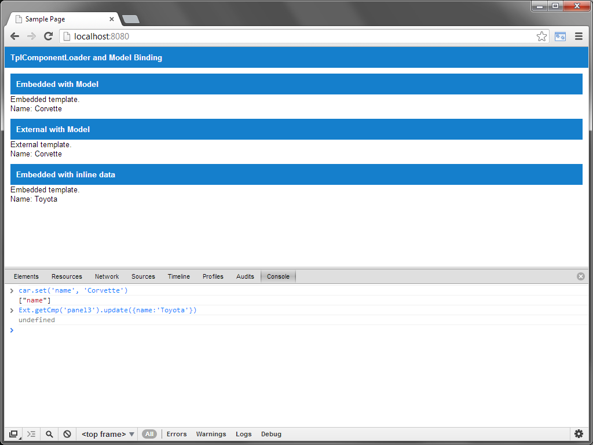

This demo showcases ExtJS and augmenting the ComponentLoader to support XTemplates via embedded or url.
It also shows binding a model to the template that auto updates when the model changes.
Live Demo
Demo has an embedded template and external template.

Use the console to update the model.

Notice two templates were updated.
